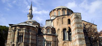

| Kariye (Chora) Kilisesi, 6. yüzyıla kadar giden bir geçmişe sahiptir. Günümüze ulaşmış hali Osmanlı döneminde ve 20. yüzyılin ikinci yarısında geçirdiği onarımların sonucudur.Daha önceleri kilise çevresinde, manastır kompleksi de ihtiva etmekteyken bu yapılar geçen zamana dayanamamışlardır. İlk önce manastır olarak 534 yılında Justinianus döneminde Aziz Theodius tarafından yapılmıstir. 11. yüzyılda 1. Aleksios’un kayınvalidesi Maria Doukaina tarafından yeniden inşa ettirilmiştir. 1204-1261 yıllarındaki Latin istilasinda harap olan manastır Theodoros Metokhites tarafından 14. yüzyılda onarılmıştır. Dış narteks ve parekklesion bu dönemde yapıya eklenmiştir. (Metokhites Parekklesion’u kendisi için inşa etmiştir ve mezarı da kilisenin girişinde mermer Bir taşla belirlenmiş olan yerdedir. |